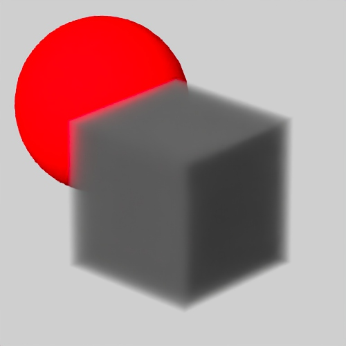

了解 MtoA 5.4.2.1 for Maya 2025.2 中的新功能。
此功能版本提供卡通色调映射、改进的体积降噪、对灯光链接的全局灯光采样支持、更好的 OSL 互操作性、OpenVDB 11 更新以及多个错误修复。
有关最近添加的功能和错误修复的完整列表，请参见 Arnold for Maya 发行说明。
卡通色调映射
现在，您可以在卡通着色器中驱动色调映射的色调和饱和度。卡通着色器有四个新参数，对现有基于值的色调映射参数进行了补充。连接的着色器的 U 坐标驱动直接灯光色调，V 坐标驱动饱和度，从而使像下面这些纹理能够映射卡通着色器对彩色照明的响应（注意：为获得最佳效果，请确保将图像的包裹模式设置为“钳制”(clamp)，并将过滤器设置为“最近”(closest)）(ARNOLD-10687)。这些卡通参数包括：
 |
 |
|
| 无 base_tonemap_hue_saturation | 图像 -> base_tonemap_hue_saturation | 图像 -> specular_tonemap_hue_saturation |
 |
 |
| 调色板图像 -> base_tonemap_hue_saturation | image.offset_u：0 到 1（灯光颜色保持不变） |
更好的体积降噪
体积降噪现在可以产生更好的结果。体积反照率计算方式的更改有助于降噪器保留更多细节。在背景中查看对象时的环绕瑕疵也会减少，并且新的 N_denoise AOV 修复了低 AA 渲染中可见的某些降噪瑕疵。（ARNOLD-14936、ARNOLD-13071）
|
|
 |
 |
| 7.3.1 | 7.3.2 |
|
|
 |
 |
| 7.3.1 | 7.3.2 |
|
|

|
| 7.3.1 | 7.3.2 |
灯光链接的多灯光支持
全局灯光采样现在应用于与形状链接的每组灯光。这可以提高具有灯光链接的场景的渲染性能。现在，当使用“全局灯光采样”(Global Light Sampling)时，ALab 场景渲染速度是原来的两倍。(ARNOLD-14985)
改进了 GPU 上的标准头发
GPU 渲染器现在支持 extra_depth 参数。这样，无需升高 GI_specular_depth 即可精确渲染金色或亮色头发。
改进了体积反照率 AOV
现在，体积反照率值更加以物理为基础。这改进了体积降噪，任何使用体积反照率的 LPE AOV 现在对合成更有用。为了向后兼容，可以将新的全局选项 legacy_volume_albedo 设置为 true。(ARNOLD-13071)
烘焙几何体现在可以烘焙到 USD
细分和置换几何体现在可以烘焙到 USD、ASS 或 OBJ。(MTOA-1918)
对 Arnold 渲染视图快照工作流的改进
- 默认情况下，快照现在指向基于当前场景名称的文件夹。您可以改用自定义文件夹，此自定义位置将与场景一起保存并使用，而不是默认场景文件夹 (MTOA-1923)
- 可以将快照移动到其他文件夹。当设置新的快照文件夹或加载具有其他快照文件夹的场景时，将显示“移动”(Move)选项，询问您是否要移动当前快照。(MTOA-1932)
- 新的“启用快照文件夹”(Enable Snapshots Folder)选项，可通过 MEL 或 Python 查询或设置
// Get the value of the Enable Snapshots Folder option arnoldRenderView -get "Enable Snapshots Folder"; // Result: 1 // // Set the Enable Snapshots Folder option arnoldRenderView -opt "Enable Snapshots Folder";
改进了 OSL 互操作性
连接到 Arnold 着色器时，现在支持将 color4、color2、vector4、vector2 和 matrix33 作为 OSL 着色器的输出类型。此外，输出 RGBA 或 Vector2 类型的 Arnold 着色器现在可以直接连接到 OSL 着色器 color4 和 vector2 输入参数。这些功能使混合 Arnold 和 MaterialX 标准库着色器节点变得更加容易。（ARNOLD-1398、ARNOLD-14692）
将 OpenVDB 更新为版本 11.0
Arnold 现在使用最新 OpenVDB 库。有关 OpenVDB 版本 7.1.1 和版本 11.0 之间的更改列表，请参见发行说明。(ARNOLD-11217)
将 MtoA Windows 安装程序更改为 MSI
MtoA 现在具有使用 Microsoft Installer Framework 的集成度更高的安装程序 (MTOA-1816)
USD 增强功能
- 圆柱体灯光 - 圆柱体灯光保存为 UsdLuxCylinderLight 基本体 - usd#1894
API 更改
- 几何体烘焙 API：现在可以烘焙细分和置换的几何体。可以将烘焙的几何体保存在另一个空间中，也可以在同一个空间中就地更改几何体。通常，您会使用 AtNodeIterator 循环浏览场景节点来烘焙几何体。当前，几何体烘焙仅适用于多边形网格节点。(ARNOLD-2815)
不兼容的更改
- 将 usdz 文件保存到 usdz_tx 文件夹：以前，读取 .usdz 文件时，生成的任何 .tx 文件都将保存到名为 <usdz_filename>.tmp 的文件夹中。.tmp 扩展名可能导致用户过早删除此文件夹，从而导致下次渲染 usdz 文件时产生额外工作。现在，这些文件将写入名为 <usdz_filename>.usdz_tx 的文件夹并从中读取。(ARNOLD-14999)
- 改进的体积 AOV：体积反照率 AOV 和 LPE 散射事件已得到改进。为了向后兼容，可以将新的全局选项 legacy_volume_albedo 设置为 true。(ARNOLD-13071)
错误修复
- MTOA-1906 - 叠加成像器：<frame> 标记在“更新整个场景”(Update Full Scene)之前不会随帧更改而更新。
- MTOA-1798 - ADPClientService.exe 阻止 MtoA 安装程序。
- MTOA-1927 - 脚本编辑器中的“onCameraCreated”调试消息
- MTOA-1880 - 将 Arnold 点节点连接到指定的着色器时发生崩溃
- MTOA-1861 - 渲染时 Materialx 体积节点发生崩溃
- MTOA-1233 -“导出全部/导出当前选择”(Export All/Export Selection)对话框中的“完整路径”(Full Paths)复选框不起作用
- MTOA-1213 - 加载某些 tx 文件（例如将多部分子图像用作 Mipmap 级别的文件）时 Maya 崩溃
- MTOA-1936 - 加载 MtoA 将删除“属性编辑器”(Attribute Editor)菜单自定义
- ARNOLD-8165 - 在置换中使用曲率、环境光遮挡或圆角时发生崩溃
- ARNOLD-14551 - 当 FIS 处于启用状态时添加日志通知
- ARNOLD-14590 - 太亮的灯光（如太阳）未被稠密体积正确遮挡
- ARNOLD-14970 - [GPU] OSL 着色器发生罕见的“堆栈溢出异常”崩溃
- ARNOLD-14995 - [GPU] 尝试渲染 Bifrost 体积时发生崩溃
- ARNOLD-14998 - 当 texture_searchpath 包含根目录时，Windows 中发生罕见的崩溃
- ARNOLD-15015 - 当销毁其他世界时，分析器数据丢失
- ARNOLD-15030 - GPU 渲染器和降噪器成像器错误地覆盖在选项中设置的 FIS 参数
- ARNOLD-15040 - AiTextureLoad 使用将子图像用作 Mipmap 的纹理时发生崩溃
- usd#1900 - 修复 Arnold 不可变换基本体的变换层级
- usd#1903 - 当着色器遮罩处于禁用状态时，USD Writer 应跳过材质
- usd#1906 - 修复渲染代理中的灯光过滤器指定顺序，使其与程序一致。
- usd#1912 - 程序交互式更新不考虑基本体可见性